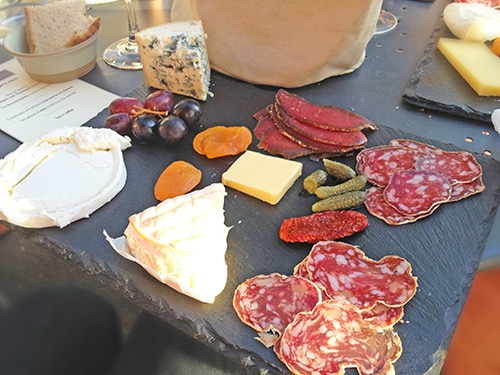
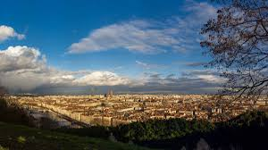
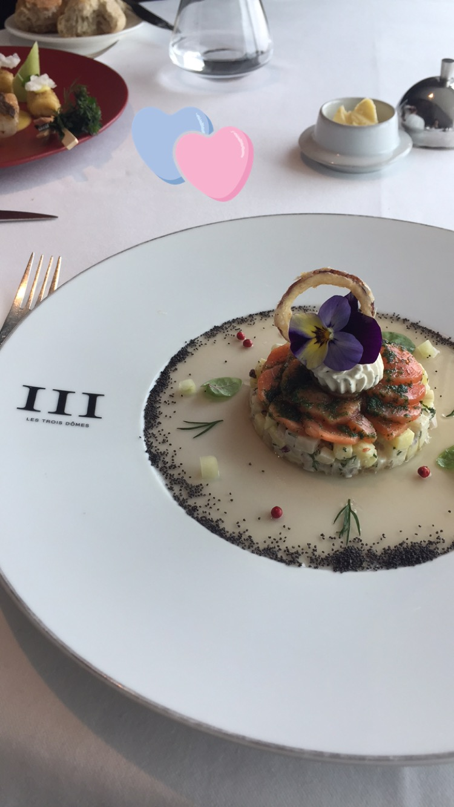
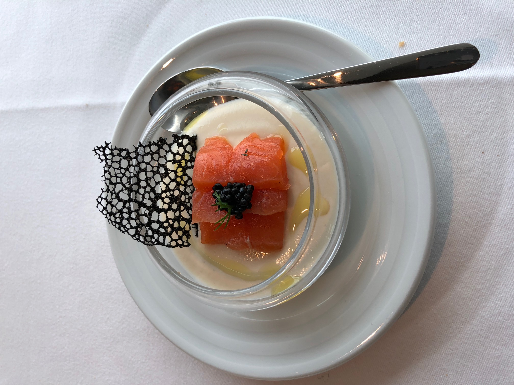
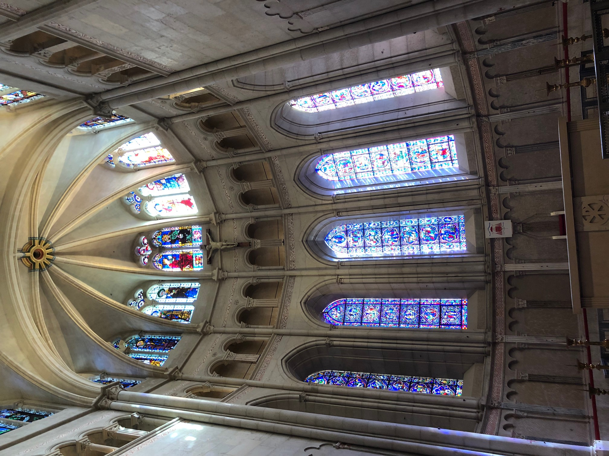
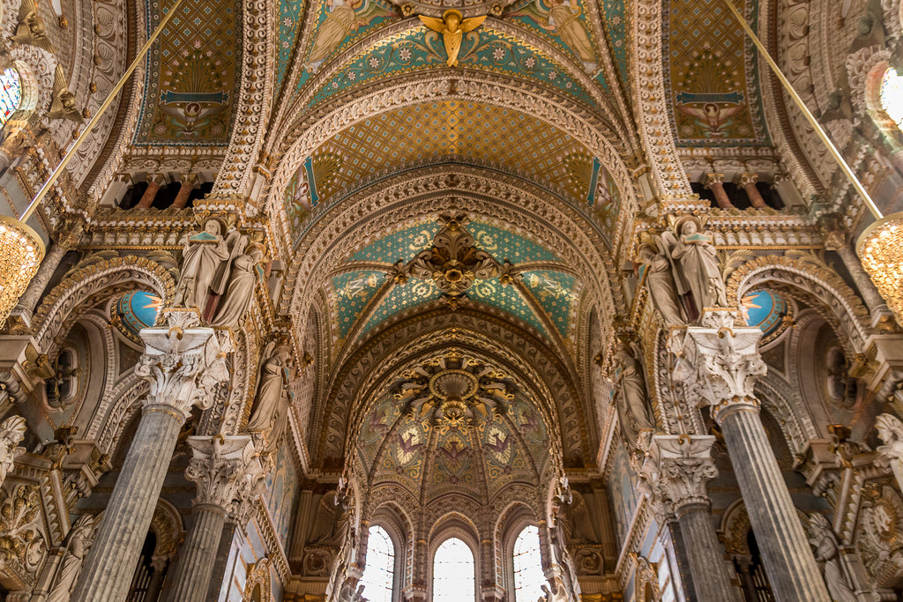

Local
Bouchon Saint Joseph @ Vieux Lyon

There are many Bouchon (typical food from Lyon, which is a famous for its gibelts cuisine). Saint Joseph is very nice you’ll get 3 courses for 17€ . I recomand trying the Rosette (delicious pork sausage), the cheese plate from the region and of course try any red wine from Cote du Rhone. The restaurant is very small and typlical its owner live in Lyon for generations and they are particularly welcoming and generous. Jardin des Curiosités @ Saint Just
This is my favourite secrete place. You’ll get there only by a (long) uphill walk from the Vieux Lyon to Saint Just. But the breathtaking view that you’ll find when you arrive on top is litterly BREATH-TAKING. You will discover a full panorama view of the city, overooking both rivers and beautiful Haussmanian quarters. Take up the challenge!
Tourist
Le Trois Dome @ Part Dieu
 The view from the top of the Sofitel Hotel, overlooking the river, was very pleasant for a Michelin Starred lunch. I particularly liked the Trout from Isère Region Marinated with Dill with Salad of New Potatoes and Apple, Red Onions. It was the best trout I've had in a long time! Basilica of Notre-Dame @ Fourvière
 After climbing a very long slope up to the top of the hill, the view was extremely rewarding. It was beautiful to be able to see the entire tsown. The Roman Theatre nearby was extremely scenic and great for photographs!